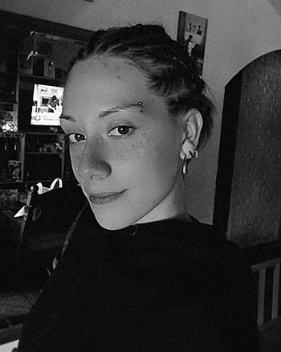

- Soy instrutora de acrobacia sobre telas y trapecio (actividades de circo).
- Me encanta coser, por lo que me encargan (mi familia) a arreglar prendas que ya se deben tirar
- En mis pocos momentos libres me gusta dibujar y pintar
- Tengo una familia creativa y con buenos criterios sobre el diseño
- Soy adiestradora de caninos
Aptitudes
- Creatividad
- Resolución de problemas
- Adaptación
- Habilidades comunicativas
- Trabajo en equipo
- Responsabilidad
Estudios
- Bachiller en Economía y Administración - Colegio Instituto Amancio Alcorta (2019)
- Licenciatura en Diseño y Comunicación Visual - UNLa (2020-actualidad)
- Adiestración y educaión canina (2022)